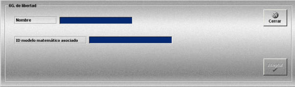

Buques 6 GDL
La creación y edición de plataformas de tipo 6G. de libertad se realiza mediante la siguiente ventana.

Esta ventana permite definir plataformas de tipo 6 GDL que podrán ser añadidas a las unidades participantes en los Ejercicios.
A continuación se describen los datos que incluye esta ventana.
Nombre: Nombre de la plataforma de tipo 6G. de libertad.
Formato: caracteres alfanuméricos.
ID modelo matemático asociado: Identificador del modelo matemático de 6 grados de libertad que se usa para controlar la navegación del buque.